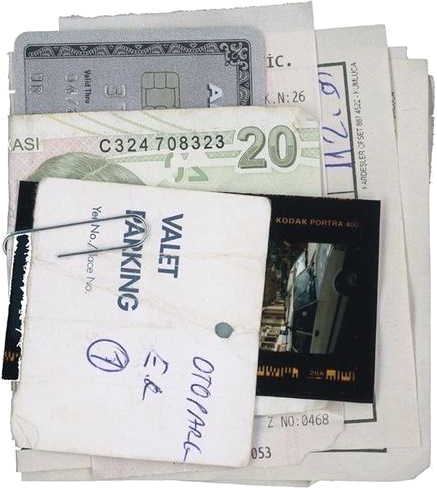
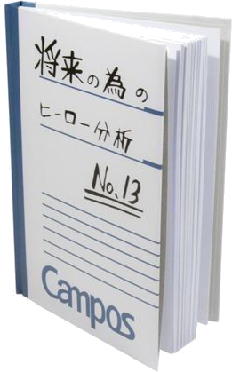

Sourcing - Energy & Emerging Technology Intern
- Incoming Summer 2026: working on SAP supply chain implementation.
resume highlights

Currently in my second year at Cornell pursing a major in Operations Research and Information Engineering and a minor in Business with a cummulative GPA of 3.74/4.0.

Optimization, Object Oriented Programming and Data Structures, Practical Tools for Operations Research, Machine Learning and Data Science, Linear Algebra, Probability and Statistics, and Multivariable Calculus.